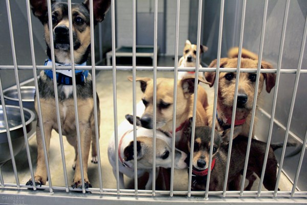

So you're interested in owning a dog — Congratulations! Now the next step is getting one. Consider adopting a dog, instead of searching to buy a specific dog from a breeder.
Deciding what breed of dog is a difficult decision, but there's a better way to find out which dog
would be best for you: Adoption! There are thousands of dogs around the country in shelters that have
been neglected or given up by their previous owners, and all they need is a comfortable home and someone
they can depend on.
The process of "shopping" for a dog usually involves the use of
puppy mills, which specialize in breeding puppies for sale. Puppy mills are usually very inhumane, and
there are many dogs in animal shelters and in the streets around the world waiting for fur-ever homes!
Here is a chart comparing adopting a dog and shopping for a specific breed:
Adopting |
Shopping |
| Animals are usually mixed-breed | You have the option to select which breed you want to buy |
| Animals vary in age, from newborn puppies up to older animals | When buying from a breeder, usually you are presented with newborn or very young animals |